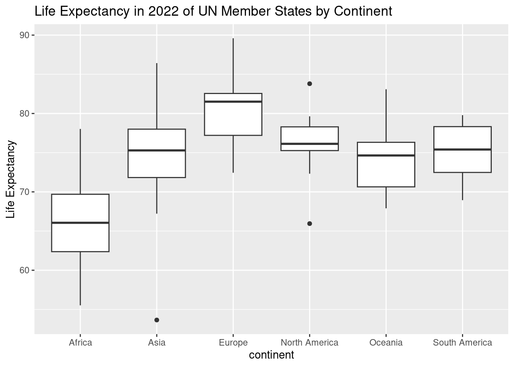
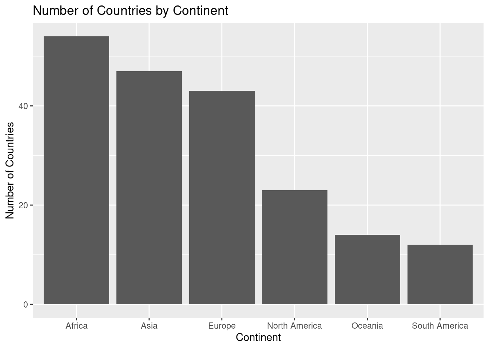
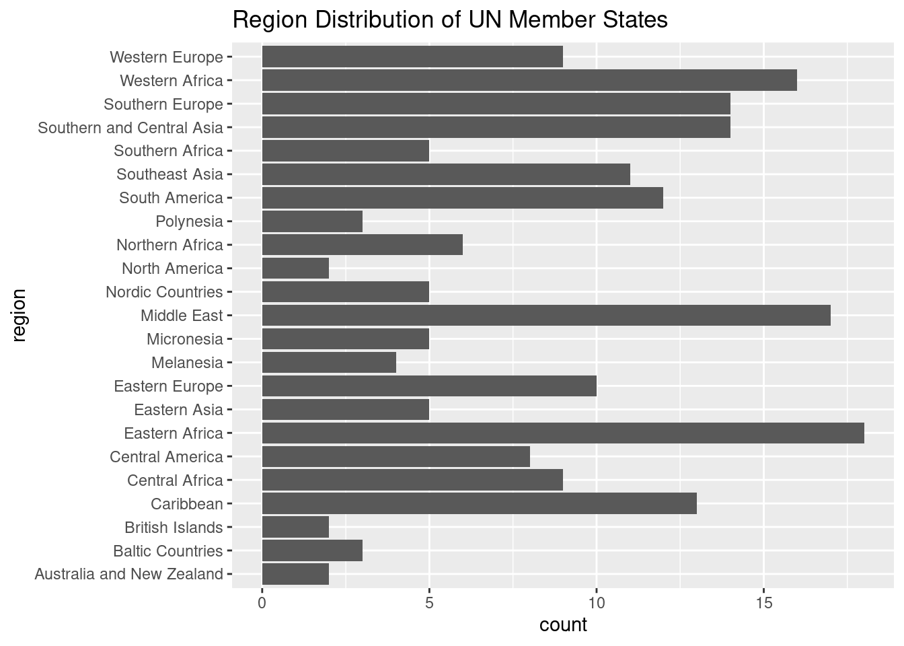
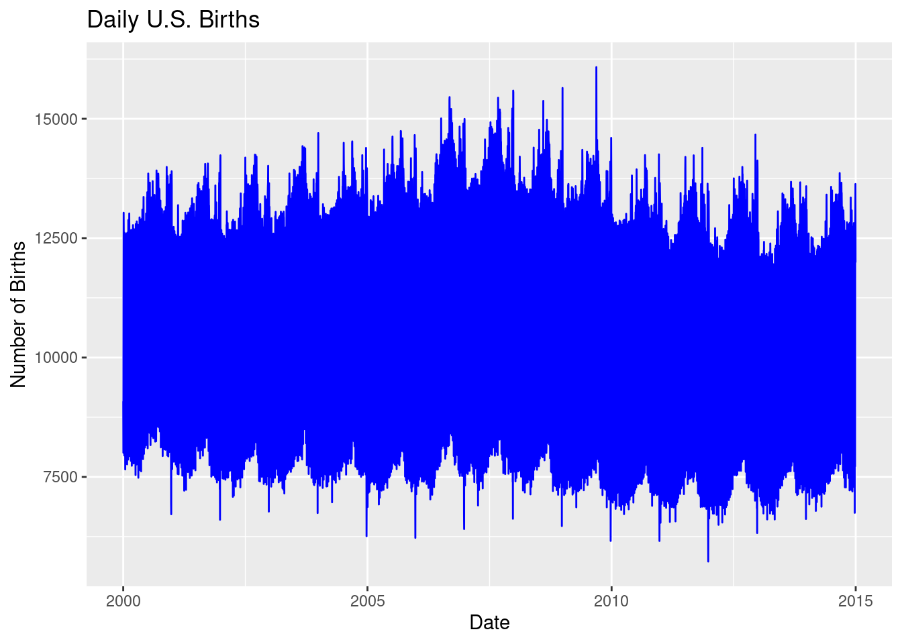
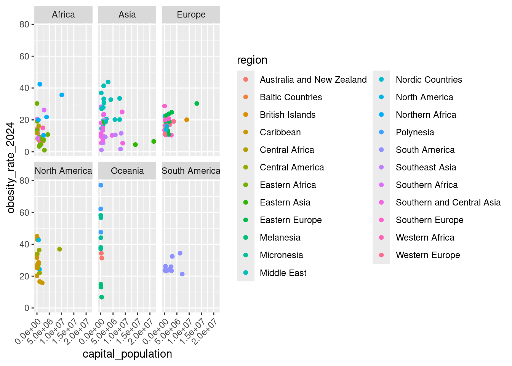

# To install a package, use the install.packages() function.
install.packages("moderndive")
install.packages("dplyr")
# or together using the c() function:
# install.packages(c("moderndive", "dplyr"))Statistics in R with the tidyverse
Day 1 Walkthrough
Working with Data in R - Explore, Visualize, Wrangle, Import
Session 1: Introduction to R and RStudio
1. Installing R and RStudio
- You need to install R first from https://cloud.r-project.org/ and then install RStudio from https://posit.co/download/rstudio-desktop/.
- Once installed, work in RStudio to interact with R efficiently.
2. Exploring the RStudio Interface
- In RStudio, you will see three panes: Console, Environment, and Files.
- Console: This is where you write and run your code.
- Environment: Keeps track of all the objects, like data frames or variables, that you create.
- Files: Helps you navigate through your project files and folders, similar to how you browse files on your computer.
- The Console is where you type and run your R code.
- You can type a command and press Enter to see the result immediately.
- If you need to run multiple lines of code, you can write them in the Source Editor (another pane you’ll see later) and send them to the Console.
- The Console also shows any error messages or outputs when your code runs.
- The Environment pane shows all objects (like datasets) currently in memory.
- As you create variables or load datasets, they’ll appear here, making it easy to keep track of what’s currently active in your session.
- You can click on any object to inspect it or open it for a detailed view.
- If your workspace gets cluttered, you can clear it by using the broom icon to remove objects no longer needed.
- The Files pane helps you navigate files in your project.
- Here, you can open scripts, view data files, and manage folders related to your project.
- You can upload files into RStudio, set your working directory, or view the file contents directly.
- Right-click on files to see options like opening, renaming, or deleting files as part of your project management.
3. Installing Packages
The install.packages() function downloads and installs packages from CRAN (the Comprehensive R Archive Network), allowing you to access additional tools and functions in R. For example, here we’re installing the moderndive and dplyr packages.
The c() function is used to create a vector in R, which is essentially a collection or sequence of elements. In this case, it’s combining the package names into a single vector, so you can install multiple packages with one command instead of typing install.packages() multiple times. This helps make your code cleaner and more efficient.
4. Loading Packages
# To load a package, use the library() function.
library(moderndive)
library(dplyr)# TIP: Check help with `?` operator or `help()` function.
?library
help(library)Once you’ve installed a package using install.packages(), you need to load it into your current R session to access its functions and features. The library() function does just that—it activates the package so you can use its tools. In this example, we’re loading both the moderndive and dplyr packages.
Loading a package is essential because installing a package only happens once, but you need to load it every time you start a new R session in RStudio and want to use that package.
If you ever need more information about how a function or package works, you can use the ? operator or the help() function.
?libraryopens the help documentation for thelibrary()function, giving you details on what it does, how to use it, and its arguments.help(library)does the same thing, providing a full description of the function or topic you need assistance with.
This is a great way to explore R’s built-in help system and get immediate answers or examples while coding.
5. Viewing a Dataset
# Can load the data into the Environment pane
data("un_member_states_2024")
# To view a dataset in RStudio, use the View() function
View(un_member_states_2024)This opens a spreadsheet-like viewer in RStudio to explore the dataset. This is what is known as a data frame in R. More specifically, this is a special kind of data frame called a tibble.
The un_member_states_2024 data contains information on 193 UN member states, with 39 columns capturing various aspects of each country. These columns include details such as the country name, ISO codes, continent, GDP per capita, population, life expectancy, and Olympic participation. It provides a comprehensive dataset for exploring demographic, economic, geographic, and social indicators at the country level.
- Identification variables:
countryandisoare the clearest - Measurement variables: remaining
6. Exploring Dataset Structure and Data Types
Each column in a dataset is assigned a data type, which describes the kind of information that the column holds. Understanding the data types is important because it determines how R interprets and handles the data. Here are some common data types you’ll encounter in R:
chr(character): Used for text data, such as names or descriptions.dbl(double): Represents numeric data with decimal values (floating-point numbers).lgl(logical): Holds TRUE or FALSE values, often used for conditions or binary data.int(integer): Stores whole numbers (without decimal points).fct(factor): Represents categorical data, where values belong to predefined categories or groups (e.g., “Male” and “Female” for gender).
To quickly check the structure of your dataset and see the data types of each column, you can use the glimpse() function from the dplyr package. This function provides a compact preview of the dataset, showing the name of each column, its data type, and the first few entries.
# To see an overview of the dataset’s structure:
glimpse(un_member_states_2024)Rows: 193
Columns: 39
$ country <chr> "Afghanistan", "Albania", "Algeria", "Andorra", "Angola", "Antigua and Barb…
$ iso <chr> "AFG", "ALB", "DZA", "AND", "AGO", "ATG", "ARG", "ARM", "AUS", "AUT", "AZE"…
$ official_state_name <chr> "The Islamic Republic of Afghanistan", "The Republic of Albania", "The Peop…
$ continent <fct> Asia, Europe, Africa, Europe, Africa, North America, South America, Asia, O…
$ region <chr> "Southern and Central Asia", "Southern Europe", "Northern Africa", "Souther…
$ capital_city <chr> "Kabul", "Tirana", "Algiers", "Andorra la Vella", "Luanda", "St. John's", "…
$ capital_population <dbl> 4601789, 557422, 3915811, 22873, 2571861, 22219, 3120612, 1096100, 431380, …
$ capital_perc_of_country <dbl> 11.5, 19.5, 8.9, 28.9, 7.5, 23.8, 6.9, 39.3, 1.7, 22.0, 22.3, 67.3, 13.7, 5…
$ capital_data_year <int> 2021, 2011, 2011, 2022, 2020, 2011, 2022, 2021, 2020, 2022, 2022, 2016, 202…
$ gdp_per_capita <dbl> 355.7778, 6810.1140, 4342.6380, 41992.7728, 3000.4442, 19919.7267, 13650.60…
$ gdp_per_capita_year <dbl> 2021, 2022, 2022, 2022, 2022, 2022, 2022, 2022, 2022, 2022, 2022, 2022, 202…
$ summers_competed_in <dbl> 15, NA, 14, NA, NA, NA, 25, 7, 27, 28, 7, 17, 10, NA, 13, 7, 27, NA, NA, NA…
$ summer_golds <int> 0, NA, 5, NA, NA, NA, 21, 2, 164, 20, 7, 8, 2, NA, 0, 13, 44, NA, NA, NA, N…
$ summer_silvers <int> 0, NA, 4, NA, NA, NA, 26, 8, 173, 35, 14, 2, 2, NA, 0, 30, 56, NA, NA, NA, …
$ summer_bronzes <int> 2, NA, 8, NA, NA, NA, 30, 8, 210, 41, 28, 6, 0, NA, 1, 42, 57, NA, NA, NA, …
$ summer_total <int> 2, NA, 17, NA, NA, NA, 77, 18, 547, 96, 49, 16, 4, NA, 1, 85, 157, NA, NA, …
$ winters_competed_in <int> 0, NA, 3, NA, NA, NA, 20, 8, 20, 24, 7, 0, 0, NA, 0, 8, 22, NA, NA, NA, NA,…
$ winter_golds <int> 0, NA, 0, NA, NA, NA, 0, 0, 6, 71, 0, 0, 0, NA, 0, 8, 2, NA, NA, NA, NA, NA…
$ winter_silvers <int> 0, NA, 0, NA, NA, NA, 0, 0, 7, 88, 0, 0, 0, NA, 0, 7, 2, NA, NA, NA, NA, NA…
$ winter_bronzes <int> 0, NA, 0, NA, NA, NA, 0, 0, 6, 91, 0, 0, 0, NA, 0, 5, 4, NA, NA, NA, NA, NA…
$ winter_total <int> 0, NA, 0, NA, NA, NA, 0, 0, 19, 250, 0, 0, 0, NA, 0, 20, 8, NA, NA, NA, NA,…
$ combined_competed_ins <int> 15, NA, 17, NA, NA, NA, 45, 15, 47, 52, 14, 17, 10, NA, 13, 15, 49, NA, NA,…
$ combined_golds <int> 0, NA, 5, NA, NA, NA, 21, 2, 170, 91, 7, 8, 2, NA, 0, 21, 46, NA, NA, NA, N…
$ combined_silvers <int> 0, NA, 4, NA, NA, NA, 26, 8, 180, 123, 14, 2, 2, NA, 0, 37, 58, NA, NA, NA,…
$ combined_bronzes <int> 2, NA, 8, NA, NA, NA, 30, 8, 216, 132, 28, 6, 0, NA, 1, 47, 61, NA, NA, NA,…
$ combined_total <int> 2, NA, 17, NA, NA, NA, 77, 18, 566, 346, 49, 16, 4, NA, 1, 105, 165, NA, NA…
$ driving_side <chr> "Right-hand traffic", "Right-hand traffic", "Right-hand traffic", "Right-ha…
$ obesity_rate_2024 <dbl> 10.3, 21.3, 21.8, 13.6, 6.8, 43.1, 32.4, 19.5, 31.3, 17.1, 20.6, 43.7, 36.9…
$ obesity_rate_2016 <dbl> 5.5, 21.7, 27.4, 25.6, 8.2, 18.9, 28.3, 20.2, 29.0, 20.1, 19.9, 31.6, 29.8,…
$ has_nuclear_weapons_2024 <lgl> FALSE, FALSE, FALSE, FALSE, FALSE, FALSE, FALSE, FALSE, FALSE, FALSE, FALSE…
$ population_2024 <dbl> 40121552, 3107100, 47022473, 85370, 37202061, 102634, 46994384, 2976765, 26…
$ area_in_square_km <dbl> 652864, 28748, 2381741, 468, 1246700, 442, 2796427, 29743, 7692024, 83878, …
$ area_in_square_miles <dbl> 252072.0961, 11099.6603, 919594.9636, 180.6957, 481353.3634, 170.6571, 1079…
$ population_density_in_square_km <dbl> 61.454686, 108.080562, 19.742899, 182.414530, 29.840428, 232.203620, 16.805…
$ population_density_in_square_miles <dbl> 159.166971, 279.927486, 51.133896, 472.451658, 77.286384, 601.404862, 43.52…
$ income_group_2024 <fct> Low income, Upper middle income, Lower middle income, High income, Lower mi…
$ life_expectancy_2022 <dbl> 53.65, 79.47, 78.03, 83.42, 62.11, 77.80, 78.31, 76.13, 83.09, 82.27, 74.15…
$ fertility_rate_2022 <dbl> 4.3, 1.4, 2.7, NA, 5.0, 1.6, 1.9, 1.6, 1.6, 1.5, 1.6, 1.4, 1.8, 1.9, 1.6, 1…
$ hdi_2022 <dbl> 0.462, 0.789, 0.745, 0.884, 0.591, 0.826, 0.849, 0.786, 0.946, 0.926, 0.760…In this example, glimpse(un_member_states_2024) gives you a summary of the un_member_states_2024 dataset, allowing you to quickly inspect the data types and a snapshot of the content in each column. It’s a handy tool for understanding your data before diving into further analysis!
7. Accessing a Single Column
To access a specific column in a dataset, R provides a simple and efficient way to do so using the $ operator. This allows you to extract a single column from a data frame by specifying the column name.
# To access a specific column, use the `$` operator:
un_member_states_2024$country [1] "Afghanistan" "Albania" "Algeria"
[4] "Andorra" "Angola" "Antigua and Barbuda"
[7] "Argentina" "Armenia" "Australia"
[10] "Austria" "Azerbaijan" "Bahamas, The"
[13] "Bahrain" "Bangladesh" "Barbados"
[16] "Belarus" "Belgium" "Belize"
[19] "Benin" "Bhutan" "Bolivia"
[22] "Bosnia and Herzegovina" "Botswana" "Brazil"
[25] "Brunei" "Bulgaria" "Burkina Faso"
[28] "Burundi" "Cabo Verde" "Cambodia"
[31] "Cameroon" "Canada" "Central African Republic"
[34] "Chad" "Chile" "China"
[37] "Colombia" "Comoros" "Congo, Dem. Rep."
[40] "Congo, Rep." "Costa Rica" "Cote d'Ivoire"
[43] "Croatia" "Cuba" "Cyprus"
[46] "Czechia" "Denmark" "Djibouti"
[49] "Dominica" "Dominican Republic" "Ecuador"
[52] "Egypt" "El Salvador" "Equatorial Guinea"
[55] "Eritrea" "Estonia" "Eswatini"
[58] "Ethiopia" "Fiji" "Finland"
[61] "France" "Gabon" "Gambia, The"
[64] "Georgia" "Germany" "Ghana"
[67] "Greece" "Grenada" "Guatemala"
[70] "Guinea" "Guinea-Bissau" "Guyana"
[73] "Haiti" "Honduras" "Hungary"
[76] "Iceland" "India" "Indonesia"
[79] "Iran" "Iraq" "Ireland"
[82] "Israel" "Italy" "Jamaica"
[85] "Japan" "Jordan" "Kazakhstan"
[88] "Kenya" "Kiribati" "Korea, North"
[91] "Korea, South" "Kuwait" "Kyrgyzstan"
[94] "Laos" "Latvia" "Lebanon"
[97] "Lesotho" "Liberia" "Libya"
[100] "Liechtenstein" "Lithuania" "Luxembourg"
[103] "Madagascar" "Malawi" "Malaysia"
[106] "Maldives" "Mali" "Malta"
[109] "Marshall Islands" "Mauritania" "Mauritius"
[112] "Mexico" "Micronesia, Federated States of" "Moldova"
[115] "Monaco" "Mongolia" "Montenegro"
[118] "Morocco" "Mozambique" "Myanmar"
[121] "Namibia" "Nauru" "Nepal"
[124] "Netherlands" "New Zealand" "Nicaragua"
[127] "Niger" "Nigeria" "North Macedonia"
[130] "Norway" "Oman" "Pakistan"
[133] "Palau" "Panama" "Papua New Guinea"
[136] "Paraguay" "Peru" "Philippines"
[139] "Poland" "Portugal" "Qatar"
[142] "Romania" "Russia" "Rwanda"
[145] "Samoa" "San Marino" "Sao Tome and Principe"
[148] "Saudi Arabia" "Senegal" "Serbia"
[151] "Seychelles" "Sierra Leone" "Singapore"
[154] "Slovakia" "Slovenia" "Solomon Islands"
[157] "Somalia" "South Africa" "South Sudan"
[160] "Spain" "Sri Lanka" "St. Kitts and Nevis"
[163] "St. Lucia" "St. Vincent and the Grenadines" "Sudan"
[166] "Suriname" "Sweden" "Switzerland"
[169] "Syria" "Tajikistan" "Tanzania"
[172] "Thailand" "Timor-Leste" "Togo"
[175] "Tonga" "Trinidad and Tobago" "Tunisia"
[178] "Turkiye" "Turkmenistan" "Tuvalu"
[181] "Uganda" "Ukraine" "United Arab Emirates"
[184] "United Kingdom" "United States" "Uruguay"
[187] "Uzbekistan" "Vanuatu" "Venezuela"
[190] "Vietnam" "Yemen" "Zambia"
[193] "Zimbabwe" In this example, un_member_states_2024$country extracts the country column from the un_member_states_2024 dataset. This column contains the names of all the UN member states.
- The
$operator acts like a shortcut, letting you directly pull out and work with one column without needing to extract the entire dataset. - This is useful when you need to perform operations or analyses on just one column of data, such as calculating summary statistics or visualizing that particular variable.
When you run this line of code, R will return a list of all the countries in the dataset, making it easier to focus on that specific part of your data.
8. Checking the First Few Rows
# To quickly see the first 6 rows of the dataset:
head(un_member_states_2024)# A tibble: 6 × 39
country iso official_state_name continent region capital_city capital_population capital_perc_of_coun…¹
<chr> <chr> <chr> <fct> <chr> <chr> <dbl> <dbl>
1 Afghanistan AFG The Islamic Republi… Asia South… Kabul 4601789 11.5
2 Albania ALB The Republic of Alb… Europe South… Tirana 557422 19.5
3 Algeria DZA The People's Democr… Africa North… Algiers 3915811 8.9
4 Andorra AND The Principality of… Europe South… Andorra la … 22873 28.9
5 Angola AGO The Republic of Ang… Africa Centr… Luanda 2571861 7.5
6 Antigua and Barbuda ATG Antigua and Barbuda North Am… Carib… St. John's 22219 23.8
# ℹ abbreviated name: ¹capital_perc_of_country
# ℹ 31 more variables: capital_data_year <int>, gdp_per_capita <dbl>, gdp_per_capita_year <dbl>,
# summers_competed_in <dbl>, summer_golds <int>, summer_silvers <int>, summer_bronzes <int>, summer_total <int>,
# winters_competed_in <int>, winter_golds <int>, winter_silvers <int>, winter_bronzes <int>, winter_total <int>,
# combined_competed_ins <int>, combined_golds <int>, combined_silvers <int>, combined_bronzes <int>,
# combined_total <int>, driving_side <chr>, obesity_rate_2024 <dbl>, obesity_rate_2016 <dbl>,
# has_nuclear_weapons_2024 <lgl>, population_2024 <dbl>, area_in_square_km <dbl>, area_in_square_miles <dbl>, …This helps in getting a peek at the data without overwhelming your screen. It can be a little hard to use if lots of columns though. glimpse() can be better for that.
9. Basic Operations in R
In R, you can use it just like a calculator to perform basic arithmetic operations or create sequences of numbers. Let’s look at two examples:
# You can do basic math in R, like addition:
2 + 2[1] 4# Or create sequences:
seq(from = 1, to = 10, by = 2)[1] 1 3 5 7 9In the first line,
2 + 2simply adds two numbers together, and R will output the result (which is 4) directly in the Console.The second line,
seq(from = 1, to = 10, by = 2), generates a sequence of numbers. This command creates a sequence that starts at 1, ends at 10, and increases by 2 with each step. The output will be:1, 3, 5, 7, 9.
Note: R will automatically display the results in the Console unless you assign the output to a variable or name. If you want to store the result for later use, you can assign it using the assignment operator (<-), like this:
# Assign the result of a sequence to a variable:
my_sequence <- seq(from = 1, to = 10, by = 2)Now, the sequence is saved as my_sequence, and you can use it later in your analysis!
10. Using Functions in R
In R, functions often have arguments that specify how they should behave. You can pass these arguments in two ways: by naming them explicitly or by using their position in the function. Let’s look at how this works with the seq() function, which creates sequences of numbers.
# Using named arguments in functions:
seq(from = 5, to = 100, by = 5) [1] 5 10 15 20 25 30 35 40 45 50 55 60 65 70 75 80 85 90 95 100# Or using positional arguments:
seq(5, 100, 5) [1] 5 10 15 20 25 30 35 40 45 50 55 60 65 70 75 80 85 90 95 100- In the first line, we’re using named arguments (
from,to,by) to clearly specify where the sequence starts, where it ends, and the step size between numbers. This makes it easy to understand what each value represents.from = 5means the sequence starts at 5.to = 100means it ends at 100.by = 5specifies the step size of 5 between each number.
- In the second line, we’re using positional arguments. R assumes the order of the arguments based on their position:
- The first value
5is the starting point (from). - The second value
100is the ending point (to). - The third value
5is the step size (by).
- The first value
Both versions of the function produce the same result: 5, 10, 15, ..., 100. Using named arguments makes your code more readable, especially in longer functions, while positional arguments can make your code shorter and quicker to write when the order of the arguments is clear.
Session 1 Review Questions
(1.1) Which of the following is required before you can use RStudio effectively?
A. You need to install RStudio first, as R is automatically included.
B. R should be installed from the R Project website, and then RStudio can be installed separately.
C. R is pre-installed on most operating systems, so only RStudio needs to be downloaded.
D. R and RStudio can be used without any installation, directly from a web browser.
(1.2) What is the purpose of the Environment pane in RStudio?
A. To display the output of the R code you run, including plots and messages.
B. To show all objects and datasets currently loaded in your R session.
C. To provide a workspace for writing R scripts and functions.
D. To navigate and organize the files within your project folder.
(1.3) How do you install multiple R packages in one step?
A. Use the install.packages() function with each package listed individually: install.packages("ggplot2"), install.packages("dplyr").
B. You must install each package one by one, as R doesn’t allow installing multiple packages in a single command.
C. Use the install.packages() function with the c() function to install several packages at once.
D. You can install multiple packages by using the load() function for each package separately.
(1.4) Which of the following correctly loads the dplyr package into your R session?
A. load(dplyr)
B. library(dplyr)
C. install.packages("dplyr")
D. View(dplyr)
(1.5) What does the glimpse() function from the dplyr package do?
A. It provides a detailed report of summary statistics for each variable in the dataset.
B. It opens the dataset in a spreadsheet-like viewer for easy exploration.
C. It gives a quick overview of the structure of a dataset, showing the data types and the first few entries of each column.
D. It creates a visual summary of numeric columns using histograms and scatterplots.
Session 1 Review Question Answers
(1.1) Which of the following is required before you can use RStudio effectively?
Correct Answer:
B. R should be installed from the R Project website, and then RStudio can be installed separately.
Explanation:
RStudio is an IDE for R, so R must be installed first, as RStudio provides an interface to interact with R.
(1.2) What is the purpose of the Environment pane in RStudio?
Correct Answer:
B. To show all objects and datasets currently loaded in your R session.
Explanation:
The Environment pane allows you to see and manage the datasets and objects that are available in memory during your R session.
(1.3) How do you install multiple R packages in one step?
Correct Answer:
C. Use the install.packages() function with the c() function to install several packages at once.
Explanation:
The install.packages() function can accept multiple package names within the c() function, allowing you to install several packages in one step.
(1.4) Which of the following correctly loads the dplyr package into your R session?
Correct Answer:
B. library(dplyr)
Explanation:
To load a package into your R session, you need to use the library() function. This makes the functions from the package available to use.
(1.5) What does the glimpse() function from the dplyr package do?
Correct Answer:
C. It gives a quick overview of the structure of a dataset, showing the data types and the first few entries of each column.
Explanation:
glimpse() provides a compact overview of a dataset, displaying the data types and a preview of the values in each column.
Session 2: Data Visualization with ggplot2
11. Installing and Loading Necessary Packages
# Load required packages for data visualization
library(ggplot2)
library(moderndive) # Not necessary if already loaded
# TIP: You can install packages if not already installed
# install.packages(c("ggplot2", "moderndive"))This session requires the ggplot2 and moderndive packages for creating visualizations using the un_member_states_2024 data. We’ll introduce a couple other packages as needed throughout.
12. Visualizing Population Distribution: Histogram
Histograms are a great way to visualize the distribution of a numeric variable—in this case, the population of UN member states. In R, you can create a histogram using the ggplot2 package, which provides a flexible framework for building visualizations.
# Create a histogram of population distribution
ggplot(un_member_states_2024, aes(x = population_2024)) +
geom_histogram(fill = "steelblue", color = "white") +
# Add labels to better understand plot
labs(title = "Population Distribution of UN Member States",
x = "Population",
y = "Frequency")`stat_bin()` using `bins = 30`. Pick better value with `binwidth`.ggplot(un_member_states_2024, aes(x = population_2024)): This initializes the plot using theggplot()function. It specifies the dataset (un_member_states_2024) and the aesthetic mapping (aes()) to indicate that the population column should be plotted on the x-axis.geom_histogram(): This function adds a histogram layer to the plot. In this case, we use:fill = "steelblue"to color the bars inside the histogram.color = "white"to outline the bars with a white border, making the bars visually distinct.
labs(): This function adds labels to the plot to make it more informative:title = "Population Distribution of UN Member States": The title of the plot.x = "Population": The label for the x-axis (which represents population).y = "Frequency": The label for the y-axis (which represents how frequently populations of a certain size appear).
This histogram allows you to visualize how the population is distributed across the UN member states. You can see the frequency of different population ranges, which gives you a sense of where most countries fall in terms of population size.
Note: You can adjust the binwidth argument in geom_histogram() to control the width of the bars (or “bins”) used in the histogram. Smaller bins give you more detail, while larger bins smooth out the distribution for a broader overview.
For example:
geom_histogram(binwidth = 5000000)This would change the bin width to 5 million, grouping countries with similar population sizes together.
13. Visualizing Life Expectancy: Side-by-side Boxplot
A boxplot is a great way to visualize the spread of data and detect any outliers in a dataset. It provides a clear summary of how the values are distributed, such as life expectancy in this example, and helps to compare across different groups—like continents.
# Create a boxplot to see GDP per capita spread by continent
ggplot(un_member_states_2024, aes(x = continent, y = life_expectancy_2022)) +
geom_boxplot() +
labs(title = "Life Expectancy in 2022 of UN Member States by Continent",
y = "Life Expectancy")Warning: Removed 4 rows containing non-finite outside the scale range (`stat_boxplot()`).
ggplot(un_member_states_2024, aes(x = continent, y = life_expectancy_2022)): This initializes the plot using theggplot()function, setting the dataset (un_member_states_2024) and defining the aesthetics:- The x-axis represents
continent, which shows the different continents. - The y-axis represents
life_expectancy_2022, showing the life expectancy values for each UN member state in 2022.
- The x-axis represents
geom_boxplot(): This function adds the boxplot to the graph. Each continent will have its own boxplot, summarizing the spread of life expectancy within that group. The box shows the interquartile range (IQR) (middle 50% of the data), the line inside represents the median, and the “whiskers” show the range of the data. Outliers are represented as points outside the whiskers.labs(): This function adds labels to make the plot more informative:title = "Life Expectancy in 2022 of UN Member States by Continent": The title helps clarify what the plot is showing.y = "Life Expectancy": The y-axis label indicates that we’re looking at life expectancy values.
The boxplot allows you to compare the distribution of life expectancy across different continents and see any outliers—countries whose life expectancy significantly differs from others on the same continent.
- Key insights from a boxplot:
- The spread of each box shows how life expectancy varies within each continent.
- The median line helps you quickly see the central tendency for each continent.
- Outliers are points that fall outside the whiskers, signaling countries with unusual life expectancy values.
This plot provides a quick visual summary of how life expectancy varies by continent, highlighting any significant differences or unusual cases.
14. Comparing Number of Countries by Continent: Barplot
A barplot is a simple yet powerful tool for comparing the number of items across different categories—in this case, the number of countries on each continent. This plot visually shows how continents differ in terms of the number of countries they contain.
# Create a barplot to compare the number of countries by continent
ggplot(un_member_states_2024, aes(x = continent)) +
geom_bar() +
labs(title = "Number of Countries by Continent",
x = "Continent", y = "Number of Countries")
ggplot(un_member_states_2024, aes(x = continent)): This initializes the plot usingggplot(), setting the dataset asun_member_states_2024. The aesthetic mapping (aes()) specifies that the x-axis will represent the different continents.geom_bar(): This function creates the barplot, automatically counting the number of countries for each continent. Each bar represents a continent, and the height of the bar shows how many countries belong to that continent.labs(): This function adds informative labels to the plot:title = "Number of Countries by Continent": The title helps clarify the purpose of the plot.x = "Continent": The label for the x-axis, indicating the different continents.y = "Number of Countries": The label for the y-axis, showing the count of countries for each continent.
The barplot provides a clear visual comparison of the number of countries on each continent. You can quickly see which continent has the most or fewest countries and compare them side by side.
- Key insights from a barplot:
- Bar height: The taller the bar, the more countries that continent has.
- Comparison: It’s easy to compare the number of countries across continents at a glance.
- Proportional differences: You can quickly spot which continents have significantly more or fewer countries than others.
This barplot effectively shows how the number of countries varies across continents, making it easy to visually compare the different regions of the world.
15. Scatterplot: GDP per Capita vs. Life Expectancy
A scatterplot is an excellent way to visualize the relationship between two numerical variables. In this case, we are examining the relationship between a country’s GDP per capita and its life expectancy. The scatterplot helps us see if there’s any pattern or correlation between these two factors across UN member states.
# Create a scatterplot to show the relationship between GDP per capita and life expectancy
ggplot(un_member_states_2024, aes(x = gdp_per_capita, y = life_expectancy_2022)) +
geom_point(color = "darkred") +
labs(title = "GDP per Capita vs. Life Expectancy",
x = "GDP per Capita (USD)", y = "Life Expectancy (Years)")Warning: Removed 5 rows containing missing values or values outside the scale range (`geom_point()`).ggplot(un_member_states_2024, aes(x = gdp_per_capita, y = life_expectancy_2022)): This initializes the plot withggplot(), usingun_member_states_2024as the dataset. The aesthetic mapping (aes()) tells R to plot GDP per capita on the x-axis and life expectancy on the y-axis, showing how these two variables relate.geom_point(color = "darkred"): This function adds points to the plot, with each point representing a country. We use dark red as the point color to make the data stand out and easy to interpret.labs(): This function adds helpful labels to the plot:title = "GDP per Capita vs. Life Expectancy": The title explains what the plot is showing.x = "GDP per Capita (USD)": The x-axis label specifies that we’re looking at GDP per capita in US dollars.y = "Life Expectancy (Years)": The y-axis label shows that life expectancy is measured in years.
The scatterplot helps visualize the relationship between a country’s GDP per capita and life expectancy. Each point on the graph represents a country, showing how its wealth (GDP per capita) relates to the average life expectancy of its population.
- Key insights from a scatterplot:
- Positive or negative trends: You can observe whether there’s a correlation between GDP per capita and life expectancy—whether countries with higher GDP tend to have higher life expectancy, or if there’s no clear pattern.
- Clustering: Look for groups of points that cluster together, which might suggest countries with similar characteristics.
- Outliers: Notice any points that stand far away from the rest, indicating outlier countries where the relationship between GDP and life expectancy doesn’t follow the overall trend.
This scatterplot allows us to explore the relationship between economic prosperity and life expectancy across countries, giving us a visual clue about how these two variables might be connected.
Check out Subsection 2.3.2 of ModernDive V2 for overplotting discussion.
16. Faceted Scatterplot: GDP per Capita vs. Life Expectancy by Continent
Faceting is a powerful feature in ggplot2 that allows you to break down a plot by different categories—in this case, by continent. It creates multiple smaller scatterplots, each representing the relationship between GDP per capita and life expectancy for a specific continent. This helps you explore how the relationship might differ across regions of the world.
# Faceted scatterplot to see relationship by continent
ggplot(un_member_states_2024, aes(x = gdp_per_capita, y = life_expectancy_2022)) +
geom_point(color = "blue") +
facet_wrap(~continent) +
labs(title = "GDP per Capita vs. Life Expectancy by Continent",
x = "GDP per Capita (USD)", y = "Life Expectancy (Years)")Warning: Removed 5 rows containing missing values or values outside the scale range (`geom_point()`).ggplot(un_member_states_2024, aes(x = gdp_per_capita, y = life_expectancy_2022)): This initializes the plot using theun_member_states_2024dataset. The aesthetic mapping (aes()) tells R to plot GDP per capita on the x-axis and life expectancy on the y-axis, showing how these two variables are related for each country.geom_point(color = "blue"): This adds the points to the scatterplot, with each point representing a country. The points are colored blue to distinguish them visually.facet_wrap(~continent): Thefacet_wrap()function divides the plot into smaller subplots, one for each continent. This helps you compare the relationship between GDP per capita and life expectancy across different continents. Each subplot shows the countries from that specific continent, making it easier to see regional patterns.labs(): This function adds labels to the plot:title = "GDP per Capita vs. Life Expectancy by Continent": The title explains that we are comparing GDP per capita and life expectancy for each continent.x = "GDP per Capita (USD)": The x-axis label specifies that GDP per capita is measured in US dollars.y = "Life Expectancy (Years)": The y-axis label indicates that life expectancy is measured in years.
The faceted scatterplot allows you to explore the relationship between GDP per capita and life expectancy, broken down by continent. This helps you see whether the relationship holds across different regions or if there are unique patterns specific to certain continents.
- Key insights from a faceted scatterplot:
- Comparing regions: You can easily see how the relationship between GDP per capita and life expectancy differs between continents. For example, some continents may show a stronger correlation, while others may not.
- Regional trends: Faceting allows you to spot trends that are specific to each region. You might notice that countries in certain continents cluster differently.
- Outliers: Within each facet, you can spot outlier countries that deviate from the regional trend, helping you identify exceptional cases.
This faceted scatterplot provides a detailed look at how the relationship between GDP per capita and life expectancy plays out across different continents, giving you a more nuanced understanding of global data patterns.
17. Pie Chart vs Bar Chart: Region Distribution
Here’s an expanded explanation for a new R user, comparing the two approaches:
The pie chart and flipped bar chart both aim to show the distribution of UN member states across different regions, but a bar chart often provides clearer comparisons between categories due to the ease of interpreting bar lengths over pie slices.
Pie Chart:
A pie chart displays proportions, breaking the data into slices that represent the different regions.
# Create a pie chart for region distribution
ggplot(un_member_states_2024, aes(x = "", fill = region)) +
geom_bar() +
labs(title = "Region Distribution of UN Member States") +
coord_polar(theta = "y")ggplot(un_member_states_2024, aes(x = "", fill = region)): This initializes the plot withggplot(), mapping the region variable to the fill aesthetic, which assigns a different color to each region. The x = ““ ensures the chart is a single stacked bar, which we will later turn into a pie.geom_bar(): This creates a bar plot where each bar section represents the count of UN member states in each region.coord_polar(theta = "y"): This converts the bar chart into a pie chart by transforming the stacked bar into circular form, making the height of each bar section correspond to the size of a slice in the pie chart.labs(): Adds a title to explain that the chart shows the “Region Distribution of UN Member States”.
The pie chart visualizes the distribution of UN member states by region, but pie charts can sometimes make it difficult to compare slices precisely, especially if the differences between regions are small.
Flipped Bar Chart (Alternative):
A flipped bar chart shows the same information but in a way that is often easier to compare visually.
# As a bar chart instead
ggplot(un_member_states_2024, aes(x = region)) +
geom_bar() +
labs(title = "Region Distribution of UN Member States") +
coord_flip()
ggplot(un_member_states_2024, aes(x = region)): This initializes the plot, mapping the region variable to the x-axis, which automatically groups the data by region and counts the number of UN member states in each.geom_bar(): Creates a bar plot, where the height of each bar represents the number of countries in each region.coord_flip(): Flips the chart so that the regions are displayed along the y-axis, and the length of the bars is on the x-axis. This makes it easier to compare the regions, as we can now read the bar lengths more easily.labs(): Adds a title to explain that the chart shows the “Region Distribution of UN Member States”.
The flipped bar chart provides a much clearer way to compare the number of countries across regions because the lengths of the bars are easier to distinguish than the slices of a pie chart. This makes it a preferred option for visualizing categorical data with multiple regions.
Key Takeaway: - Pie Chart: Useful for showing proportions but can be harder to interpret when categories are close in size. - Flipped Bar Chart: Easier to read and compare across categories, especially when there are several regions or when the differences between regions are small.
In most cases, a flipped bar chart is the better choice for comparing categorical data like the number of countries by region.
18. Line Graph: Time Series Data
There isn’t a good example of time series data in un_member_states_2024 since it is missing data with a time component. But here is an example of how you could do from the fivethirtyeight package:
Initial Line Graph
#install.packages("fivethirtyeight")
library(fivethirtyeight)Some larger datasets need to be installed separately, like senators and house_district_forecast. To install
these, we recommend you install the fivethirtyeightdata package by running:
install.packages('fivethirtyeightdata', repos = 'https://fivethirtyeightdata.github.io/drat/', type =
'source')# Create a line graph showing the number of births over 2014
ggplot(US_births_2000_2014, aes(x = date, y = births)) +
geom_line(color = "blue") +
labs(title = "Daily U.S. Births",
x = "Date", y = "Number of Births")
ggplot(US_births_2000_2014, aes(x = date, y = births)): This initializes the plot using theUS_births_2000_2014dataset, wheredateis mapped to the x-axis andbirthsto the y-axis, plotting the number of births over time from 2000 to 2014.geom_line(color = "blue"): This function adds a line plot, using blue to represent the number of daily births over the years.labs(): This adds a title and axis labels to clarify the plot:- Title: “Daily U.S. Births” explains what’s being plotted.
- x = “Date” labels the x-axis as the dates from 2000 to 2014.
- y = “Number of Births” labels the y-axis with the number of births each day.
However, the sheer volume of data makes this graph difficult to read. The line is too dense because it includes 14 years of daily data, creating a cluttered visual. To make the graph more interpretable, we can filter the data to focus on just one year—2014.
Refining the Graph (Focusing on 2014)
To improve readability and gain clearer insights, we’ll filter the dataset to focus only on the year 2014, reducing the number of data points and creating a cleaner visualization.
# Include package for more easily working with dates
# install.packages("lubridate")
library(lubridate)
library(dplyr)
# Filter the data for 2014
US_births_2014 <- US_births_2000_2014 |>
filter(year(date) == 2014)
# Create a line graph showing the number of births in 2014
ggplot(US_births_2014, aes(x = date, y = births)) +
geom_line(color = "blue") +
labs(title = "Daily U.S. Births in 2014",
x = "Date", y = "Number of Births")
library(lubridate): Thelubridatepackage simplifies working with dates in R. It provides easy-to-use functions likeyear()to extract the year from a date, making it perfect for filtering the data by year.US_births_2014 <- US_births_2000_2014 |> filter(year(date) == 2014): This line uses the pipe operator (|>) and thefilter()function to extract only the data from 2014. Theyear(date)function (fromlubridate) helps to filter the dataset by selecting only rows where the year is 2014.Creating the refined plot:
- The process for building the plot remains the same as before, but now we’re working with only 2014 data, significantly reducing the number of points on the line.
geom_line(color = "blue"): Again, we use blue to plot the number of births on each day of 2014, which now results in a much more readable line graph.labs(): This adds labels to clarify the refined plot:- Title: “Daily U.S. Births in 2014” reflects the new focus on just one year.
- x = “Date” labels the x-axis with the dates of 2014.
- y = “Number of Births” labels the y-axis with the daily number of births.
Key Insights: - Initial Graph: The original line graph included data from 2000 to 2014, but it was too dense to be useful, with too many points crammed into the plot. - Refined Graph: By focusing on just 2014, the refined line graph provides a clear and readable view of how births varied day-by-day throughout the year. This makes it easier to spot trends or unusual patterns in the data, like seasonal changes or spikes on certain dates.
Session 2 Review Questions
(2.1) In the following code for creating a scatterplot of Fertility Rate (fertility_rate_2022) vs. Human Development Index (hdi_2022), which entries should be in quotes?
ggplot(un_member_states_2024, aes(x = fertility_rate_2022, y = hdi_2022)) +
geom_point()A. un_member_states_2024, fertility_rate_2022, and hdi_2022 should all be in quotes.
B. Only un_member_states_2024 should be in quotes, as it refers to the dataset.
C. Only fertility_rate_2022 and hdi_2022 should be in quotes, as they are variable names.
D. None of the elements in the code should be in quotes.
(2.2) How can you create a histogram of the population distribution in the un_member_states_2024 data frame?
A. geom_bar(aes(x = population_2024))
B. ggplot(aes(y = population_2024)) + geom_boxplot()
C. ggplot(un_member_states_2024, aes(x = population_2024)) + geom_histogram()
D. ggplot(un_member_states_2024, aes(x = continent)) + geom_bar()
(2.3) What does a boxplot created using the ggplot() function reveal about life expectancy?
A. The boxplot reveals the mean and standard deviation of life expectancy values.
B. It shows how life expectancy is spread and identifies outliers.
C. A boxplot represents the frequency of different life expectancy ranges.
D. It is used to display the total sum of life expectancy values for each continent.
(2.4) How can you compare the number of countries by continent using a barplot?
A. ggplot(un_member_states_2024, aes(x = continent)) + geom_bar()
B. ggplot(un_member_states_2024, aes(x = gdp_per_capita)) + geom_bar()
C. ggplot(un_member_states_2024, aes(x = continent, y = life_expectancy_2022)) + geom_bar()
D. ggplot(un_member_states_2024, aes(x = continent, fill = population_2024)) + geom_bar()
(2.5) What is an appropriate purpose of facet wrapping in a scatterplot showing Capital Population vs. Obesity Rate 2024?
A. To split the scatterplot into multiple graphs by region.
B. To add color to each region based on obesity rate.
C. To combine the population of the capital city and the country’s obesity rate in a single graph.
D. To display the relationship between capital city population and obesity rate over time.
Session 2 Review Question Answers
(2.1) In the following code for creating a scatterplot of GDP per capita vs. life expectancy, which entries should be in quotes?
Correct Answer:
D. None of the elements in the code should be in quotes because the data frame and variable names do not require them in this context.
Explanation:
In ggplot(), the dataset and the variable names should not be in quotes. Quotes are only used for strings, such as labels or titles, not for referencing data frames or columns.
(2.2) How can you create a histogram of the population distribution in the un_member_states_2024 data frame?
Correct Answer:
C. ggplot(un_member_states_2024, aes(x = population_2024)) + geom_histogram()
Explanation:
The correct syntax for creating a histogram includes specifying the data frame, defining the x-axis variable inside aes(), and using geom_histogram() to create the histogram.
(2.3) What does a boxplot created using the ggplot() function reveal about life expectancy?
Correct Answer:
B. It shows how life expectancy is spread and identifies outliers.
Explanation:
A boxplot helps to visualize the spread of data by showing the quartiles and highlighting any outliers.
(2.4) How can you compare the number of countries by continent using a barplot?
Correct Answer:
A. ggplot(un_member_states_2024, aes(x = continent)) + geom_bar()
Explanation:
Using geom_bar() with the x aesthetic set to continent creates a barplot, where the height of each bar represents the number of countries in each continent.
(2.5) What is an appropriate purpose of facet wrapping in a scatterplot showing Capital Population vs. Obesity Rate 2024?
Correct Answer:
A. To split the scatterplot into multiple graphs by region.
Explanation:
Facet wrapping divides the scatterplot into separate panels for each region, allowing for a clearer comparison of relationships across groups.
One way to produce this facetting:
ggplot(un_member_states_2024, aes(x = capital_population, y = obesity_rate_2024)) +
geom_point(aes(color = region)) +
facet_wrap(~continent) +
theme(axis.text.x = element_text(angle = 45, hjust = 1))Warning: Removed 42 rows containing missing values or values outside the scale range (`geom_point()`).
Session 3: Data Wrangling and Tidy Data
19. Filtering Rows with filter()
The filter() function allows us to pick out specific rows that meet certain conditions. For example, let’s filter out countries in Africa with a GDP per capita above a certain threshold.
The pipe operator |> allows us to chain multiple functions together for a clean and readable data transformation process. It makes it easier to pass the result of one function to the next.
# Filter countries in Africa with GDP per capita greater than $5,000
african_high_gdp <- un_member_states_2024 |>
filter(continent == "Africa", gdp_per_capita > 5000)
# TIP: Can also use the `&` instead of `,` for AND conditions
un_member_states_2024 |>
filter(continent == "Africa" & gdp_per_capita > 5000)# A tibble: 8 × 39
country iso official_state_name continent region capital_city capital_population capital_perc_of_coun…¹
<chr> <chr> <chr> <fct> <chr> <chr> <dbl> <dbl>
1 Botswana BWA The Republic of Botsw… Africa South… Gaborone 273602 10.6
2 Equatorial Guinea GNQ The Republic of Equat… Africa Centr… Malabo 297000 18.2
3 Gabon GAB The Gabonese Republic Africa Centr… Libreville 703904 30.1
4 Libya LBY The State of Libya Africa North… Tripoli 1170000 17.4
5 Mauritius MUS The Republic of Mauri… Africa Easte… Port Louis 147066 11.3
6 Namibia NAM The Republic of Namib… Africa South… Windhoek 431000 17
7 Seychelles SYC The Republic of Seych… Africa Easte… Victoria 26450 24.8
8 South Africa ZAF The Republic of South… Africa South… Pretoria 2921488 4.9
# ℹ abbreviated name: ¹capital_perc_of_country
# ℹ 31 more variables: capital_data_year <int>, gdp_per_capita <dbl>, gdp_per_capita_year <dbl>,
# summers_competed_in <dbl>, summer_golds <int>, summer_silvers <int>, summer_bronzes <int>, summer_total <int>,
# winters_competed_in <int>, winter_golds <int>, winter_silvers <int>, winter_bronzes <int>, winter_total <int>,
# combined_competed_ins <int>, combined_golds <int>, combined_silvers <int>, combined_bronzes <int>,
# combined_total <int>, driving_side <chr>, obesity_rate_2024 <dbl>, obesity_rate_2016 <dbl>,
# has_nuclear_weapons_2024 <lgl>, population_2024 <dbl>, area_in_square_km <dbl>, area_in_square_miles <dbl>, …# This is not the same as using `|` which is an OR condition
un_member_states_2024 |>
filter(continent == "Africa" | gdp_per_capita > 5000)# A tibble: 158 × 39
country iso official_state_name continent region capital_city capital_population capital_perc_of_coun…¹
<chr> <chr> <chr> <fct> <chr> <chr> <dbl> <dbl>
1 Albania ALB The Republic of Al… Europe South… Tirana 557422 19.5
2 Algeria DZA The People's Democ… Africa North… Algiers 3915811 8.9
3 Andorra AND The Principality o… Europe South… Andorra la … 22873 28.9
4 Angola AGO The Republic of An… Africa Centr… Luanda 2571861 7.5
5 Antigua and Barbuda ATG Antigua and Barbuda North Am… Carib… St. John's 22219 23.8
6 Argentina ARG The Argentine Repu… South Am… South… Buenos Aires 3120612 6.9
7 Armenia ARM The Republic of Ar… Asia Middl… Yerevan 1096100 39.3
8 Australia AUS The Commonwealth o… Oceania Austr… Canberra 431380 1.7
9 Austria AUT The Republic of Au… Europe Weste… Vienna 1962779 22
10 Azerbaijan AZE The Republic of Az… Asia Middl… Baku 2303100 22.3
# ℹ 148 more rows
# ℹ abbreviated name: ¹capital_perc_of_country
# ℹ 31 more variables: capital_data_year <int>, gdp_per_capita <dbl>, gdp_per_capita_year <dbl>,
# summers_competed_in <dbl>, summer_golds <int>, summer_silvers <int>, summer_bronzes <int>, summer_total <int>,
# winters_competed_in <int>, winter_golds <int>, winter_silvers <int>, winter_bronzes <int>, winter_total <int>,
# combined_competed_ins <int>, combined_golds <int>, combined_silvers <int>, combined_bronzes <int>,
# combined_total <int>, driving_side <chr>, obesity_rate_2024 <dbl>, obesity_rate_2016 <dbl>, …Explanation:
- continent == "Africa": Selects only rows where the continent is Africa. - gdp_per_capita > 5000: Filters for countries with a GDP per capita above $5,000.
20. Summarizing Data with summarize()
The summarize() function computes summary statistics for one or more variables. This reduces the data frame to a summary based on the functions applied.
# Summarize average life expectancy and population
summary_stats <- un_member_states_2024 |>
summarize(
avg_life_expectancy = mean(life_expectancy_2022, na.rm = TRUE),
med_population = median(population_2024, na.rm = TRUE)
)
# Can also display as a markdown table
library(knitr)
kable(summary_stats)| avg_life_expectancy | med_population |
|---|---|
| 73.82566 | 9402617 |
Explanation:
- mean(life_expectancy_2022, na.rm = TRUE): Calculates the average life expectancy while ignoring missing values. - median(population_2024, na.rm = TRUE): Computes the median population across all member states.
21. Grouping Data with group_by()
The group_by() function is used to split the data frame into groups. You can then apply functions like summarize() to calculate statistics for each group separately.
# Group by continent and summarize the average life expectancy for each group
life_expectancy_by_continent <- un_member_states_2024 |>
group_by(continent) |>
summarize(
avg_life_expectancy = mean(life_expectancy_2022, na.rm = TRUE),
sd_life_expectancy = sd(life_expectancy_2022, na.rm = TRUE)
)
life_expectancy_by_continent# A tibble: 6 × 3
continent avg_life_expectancy sd_life_expectancy
<fct> <dbl> <dbl>
1 Africa 66.3 5.59
2 Asia 74.9 5.58
3 Europe 79.9 3.71
4 North America 76.3 3.42
5 Oceania 74.4 4.83
6 South America 75.2 3.42Explanation:
- group_by(continent): Groups the data by continent. - summarize(): Calculates the average life expectancy for each continent.
22. Creating New Variables with mutate()
The mutate() function is used to add new variables or transform existing ones. This is useful for creating new columns based on existing data.
# Create a new variable that categorizes countries by GDP per capita
un_member_states_2024 <- un_member_states_2024 |>
mutate(
gdp_category = case_when(
gdp_per_capita > 30000 ~ "High",
gdp_per_capita > 10000 ~ "Medium",
TRUE ~ "Low"
)
)Explanation:
- mutate(): Adds a new column called gdp_category. - case_when(): Categorizes countries based on their GDP per capita into “High”, “Medium”, or “Low” categories.
23. Arranging Rows with arrange()
The arrange() function sorts the rows of a data frame. By default, it sorts in ascending order, but you can sort in descending order using the desc() function.
# Arrange countries by population in descending order
top_populated_countries <- un_member_states_2024 |>
arrange(desc(population_2024))
top_populated_countries# A tibble: 193 × 40
country iso official_state_name continent region capital_city capital_population capital_perc_of_coun…¹
<chr> <chr> <chr> <fct> <chr> <chr> <dbl> <dbl>
1 China CHN The People's Republic of… Asia Easte… Beijing 21542000 1.5
2 India IND The Republic of India Asia South… New Delhi 249998 0
3 United States USA The United States of Ame… North Am… North… Washington,… 670050 0.2
4 Indonesia IDN The Republic of Indonesia Asia South… Jakarta 10562088 3.9
5 Pakistan PAK The Islamic Republic of … Asia South… Islamabad 1014825 0.4
6 Nigeria NGA The Federal Republic of … Africa Weste… Abuja 1235880 0.6
7 Brazil BRA The Federative Republic … South Am… South… Brasília 2648532 1.2
8 Bangladesh BGD The People's Republic of… Asia South… Dhaka 8906039 5.3
9 Russia RUS The Russian Federation Europe Easte… Moscow 13104177 9
10 Mexico MEX The United Mexican States North Am… Centr… Mexico City 9209944 7.3
# ℹ 183 more rows
# ℹ abbreviated name: ¹capital_perc_of_country
# ℹ 32 more variables: capital_data_year <int>, gdp_per_capita <dbl>, gdp_per_capita_year <dbl>,
# summers_competed_in <dbl>, summer_golds <int>, summer_silvers <int>, summer_bronzes <int>, summer_total <int>,
# winters_competed_in <int>, winter_golds <int>, winter_silvers <int>, winter_bronzes <int>, winter_total <int>,
# combined_competed_ins <int>, combined_golds <int>, combined_silvers <int>, combined_bronzes <int>,
# combined_total <int>, driving_side <chr>, obesity_rate_2024 <dbl>, obesity_rate_2016 <dbl>, …Explanation:
- arrange(desc(population_2024)): Sorts the countries from highest to lowest population.
24. Selecting Specific Columns with select()
The select() function allows you to choose specific columns from a data frame. This is useful when you only need to work with a subset of variables.
# Select country name, continent, and population
selected_data <- un_member_states_2024 |>
select(country, continent, population_2024)
selected_data# A tibble: 193 × 3
country continent population_2024
<chr> <fct> <dbl>
1 Afghanistan Asia 40121552
2 Albania Europe 3107100
3 Algeria Africa 47022473
4 Andorra Europe 85370
5 Angola Africa 37202061
6 Antigua and Barbuda North America 102634
7 Argentina South America 46994384
8 Armenia Asia 2976765
9 Australia Oceania 26768598
10 Austria Europe 8967982
# ℹ 183 more rowsExplanation:
- select(): Chooses the country, continent, and population_2024 columns from the data frame.
25. Putting a Whole |>line Together
Here’s an expanded explanation for a new R user, guiding them through the entire pipeline process step-by-step, which filters, groups, summarizes, mutates, arranges, and selects columns from the un_member_states_2024 dataset:
# Create a pipeline that filters, groups, summarizes, mutates, arranges,
# and selects columns for countries in Asia and Europe
un_member_states_2024 |>
filter(continent %in% c("Asia", "Europe")) |>
group_by(continent) |>
summarize(
avg_gdp_per_capita = mean(gdp_per_capita, na.rm = TRUE),
avg_life_expectancy = mean(life_expectancy_2022, na.rm = TRUE)
) |>
ungroup() |> # Ungroup before creating new variables
mutate(
gdp_category = case_when(
avg_gdp_per_capita > 30000 ~ "High",
avg_gdp_per_capita > 10000 ~ "Medium",
TRUE ~ "Low"
)
) |>
arrange(desc(avg_life_expectancy)) |>
select(continent,
`Average GDP per capita` = avg_gdp_per_capita,
`Average Life Expectancy` = avg_life_expectancy,
gdp_category)# A tibble: 2 × 4
continent `Average GDP per capita` `Average Life Expectancy` gdp_category
<fct> <dbl> <dbl> <chr>
1 Europe 45698. 79.9 High
2 Asia 15272. 74.9 Medium Explanation:
1. filter(continent %in% c("Asia", "Europe")): - Filter the dataset to include only countries located in Asia and Europe. The %in% operator is used to match the continent variable with either “Asia” or “Europe,” keeping only those rows in the dataset. - This step reduces the dataset to only the countries from these two continents.
group_by(continent):- After filtering, we group the data by continent. This ensures that all subsequent calculations are performed separately for each continent (Asia and Europe).
- Grouping is a crucial step for computing statistics like averages by continent.
summarize():- We then summarize the grouped data to calculate the following statistics:
avg_gdp_per_capita = mean(gdp_per_capita, na.rm = TRUE): Calculates the average GDP per capita for each continent, excluding missing values (na.rm = TRUE).avg_life_expectancy = mean(life_expectancy_2022, na.rm = TRUE): Computes the average life expectancy in 2022 for each continent, again excluding missing values.
- This results in a summary dataset containing the average GDP per capita and life expectancy for Asia and Europe.
- We then summarize the grouped data to calculate the following statistics:
ungroup():- After summarizing, we ungroup the data. Ungrouping ensures that any further operations (like creating new variables) are applied to the entire dataset, rather than within groups.
mutate():- We create a new variable,
gdp_category, using thecase_when()function. This function helps categorize the average GDP per capita into three categories:- “High” if the average GDP per capita is greater than $30,000.
- “Medium” if it’s between $10,000 and $30,000.
- “Low” for all other values (below $10,000).
- This adds a new column to the dataset, categorizing each continent based on its economic standing.
- We create a new variable,
arrange(desc(avg_life_expectancy)):- We arrange the dataset in descending order of average life expectancy. This means that the continent with the highest average life expectancy will appear at the top.
- Sorting the data in this way helps prioritize the continents based on health outcomes.
select():- Finally, we select only the columns we want to display:
continent: The name of the continent.Average GDP per capita: The average GDP per capita (renamed for readability).Average Life Expectancy: The average life expectancy (renamed for readability).gdp_category: The economic category (High, Medium, or Low) based on the average GDP per capita.
- Renaming the columns with backticks (
``) makes the column names more descriptive.
- Finally, we select only the columns we want to display:
Key Insights:
- Pipeline Structure: This pipeline combines several steps—filtering, grouping, summarizing, mutating, arranging, and selecting—into one fluid operation. The pipe operator (|>) allows for a clear, readable flow of operations.
Grouped Summarization: The
group_by()andsummarize()steps are used to calculate summary statistics like the average GDP per capita and life expectancy for each continent.Categorization: The
mutate()step usescase_when()to classify continents into economic categories based on GDP, showing how to transform and add new variables based on existing data.Arranging and Selecting: The data is sorted by life expectancy and only the relevant columns are retained, making the final output clean and easy to interpret.
26. Creating data for geom_col() use
- Create a Summary Data Frame (
region_data):- We first need to group the dataset by region, count the number of countries in each region, and then arrange them in descending order to make the plot more readable.
region_data <- un_member_states_2024 |>
group_by(region) |>
summarize(num_countries = n()) |>
arrange(desc(num_countries))group_by(region): This groups the dataset by theregionvariable, so each region is treated as a separate group.summarize(num_countries = n()): This calculates the number of countries (n()) in each region. The result is a data frame with two columns: the region name and the number of countries in that region.arrange(desc(num_countries)): This arranges the regions in descending order of the number of countries. The region with the most countries will appear first in the dataset, making the bar chart easier to interpret.
At this stage, you have a data frame (region_data) with two columns: region and num_countries, sorted by the number of countries per region.
- Create the Bar Chart Using
geom_col()
Now that the data is prepared, let’s create a bar chart using ggplot2 to visualize the number of countries per region. We’ll use geom_col() to create the bars and coord_flip() to flip the axes for better readability.
ggplot(region_data, aes(x = reorder(region, num_countries), y = num_countries)) +
geom_col(fill = "skyblue") +
coord_flip() +
labs(title = "Number of Countries by Region",
x = "Region", y = "Number of Countries")ggplot(region_data, aes(x = reorder(region, num_countries), y = num_countries)):- This initializes the plot, using
region_dataas the data frame. aes()(aesthetic mapping) specifies thatregionwill be mapped to the x-axis andnum_countriesto the y-axis.reorder(region, num_countries)ensures that the regions are ordered by the number of countries, so the chart appears in descending order.
- This initializes the plot, using
geom_col(fill = "skyblue"):geom_col()creates the bars for the bar chart, with the height of each bar representing the number of countries in that region.- We use
fill = "skyblue"to color the bars in a light blue shade, making them visually appealing.
coord_flip():- This flips the axes so that the bars run horizontally instead of vertically. This makes the chart easier to read, especially when you have long category names (like region names).
labs():- Title: “Number of Countries by Region” clearly describes what the chart is showing.
- x = “Region” labels the x-axis (which now appears on the y-axis after the flip) as the regions.
- y = “Number of Countries” labels the y-axis (now the horizontal axis) with the count of countries for each region.
27. Converting wide data into tidy data
# Convert wide data into tidy data
library(tibble)
library(tidyr)
# Collected from https://data.worldbank.org/?locations=BR-NG-ID
wide_unemp <- tibble(
country = c("Brazil", "Nigeria", "Indonesia"),
`2021` = c(13.2, 5.4, 3.8),
`2022` = c(9.2, 3.8, 3.5),
`2023` = c(8, 3.1, 3.4)
)
# Use pivot_longer to convert data
tidy_unemp <- wide_unemp |>
pivot_longer(cols = -country,
names_to = "year",
values_to = "unemployment_perc") |>
mutate(year = as.integer(year))
# Plot data as a linegraph
ggplot(tidy_unemp, aes(x = year, y = unemployment_perc, color = country)) +
geom_point() +
geom_line() +
labs(title = "Unemployment Rate Over Time",
x = "Year", y = "Unemployment Rate (%)") +
scale_x_continuous(breaks = c(2021, 2022, 2023))Here’s an expanded explanation for a new R user, guiding them through the process of converting wide data into tidy data using pivot_longer(), followed by creating a line graph to visualize unemployment rates over time:
Explanation:
1. Convert Wide Data to Tidy Data (pivot_longer): - The initial dataset, wide_unemp, is in wide format, where each column (except country) represents a year and the unemployment rate for that year. We use pivot_longer() to convert this wide format into a tidy format so that each row represents a single observation (country-year combination).
pivot_longer(cols = -country, names_to = "year", values_to = "unemployment_perc"):- This function “pivots” the data from wide format to long format.
cols = -countrytells R to pivot all columns except for thecountrycolumn (sincecountryshould remain as a fixed identifier).names_to = "year": The column names (representing years) will be stored in a new variable calledyear.values_to = "unemployment_perc": The values from each year’s column will be stored in a new column calledunemployment_perc(representing the unemployment percentage).
mutate(year = as.integer(year)): This converts the newly createdyearcolumn from a character type (since it came from column names) into an integer type, which is necessary for plotting it as a numerical axis in the line graph.
At this stage, the data has been transformed from wide format to tidy format, with each row representing a country-year-unemployment rate combination, making it suitable for analysis and visualization.
- Create the Line Graph:
Now that the data is tidy, we can create a line graph to visualize how the unemployment rate has changed over time for each country.
ggplot(tidy_unemp, aes(x = year, y = unemployment_perc, color = country)):- This initializes the plot using the
tidy_unempdataset. The aesthetic mapping (aes()) specifies that:yeargoes on the x-axis.unemployment_percgoes on the y-axis (representing the unemployment rate as a percentage).color = country: Each country will be plotted in a different color, allowing us to compare trends across multiple countries.
- This initializes the plot using the
geom_point(): Adds points to the plot for each country-year combination, marking the unemployment rate at each year.geom_line(): Draws lines connecting the points for each country, showing the trend over time. The combination of points and lines provides both specific data points and a visual connection between them, making trends easier to see.labs(): This function adds labels to the plot:- Title: “Unemployment Rate Over Time” clearly explains what the plot is showing.
- x = “Year”: Labels the x-axis as the year.
- y = “Unemployment Rate (%)”: Labels the y-axis with the unemployment rate as a percentage.
scale_x_continuous(breaks = c(2021, 2022, 2023)):- This ensures that only 2021, 2022, and 2023 are shown as tick marks on the x-axis, making the graph more focused on recent years.
28. Importing data from a CSV file
In R, we often need to import data from external files to start working with it. One common way to do this is by using the read_csv() function from the readr package to load CSV (Comma-Separated Values) files into R.
Let’s break down how this works with the following code to load a dataset called data_dev_survey.csv.
library(readr)
# Load data from data_dev_survey.csv in the same file path as this .qmd file
data_dev_survey <- read_csv("data_dev_survey.csv")Rows: 1183 Columns: 24
── Column specification ────────────────────────────────────────────────────────────────────────────────────────────────
Delimiter: ","
chr (18): work_as_dev, age, employment, remote_work, coding_activities, ed_level, dev_type, org_size, country, lang...
dbl (5): response_id, years_code, years_code_pro, work_exp, converted_comp_yearly
date (1): survey_completion_date
ℹ Use `spec()` to retrieve the full column specification for this data.
ℹ Specify the column types or set `show_col_types = FALSE` to quiet this message.library(readr): This line loads thereadrpackage, giving us access to theread_csv()function, which is designed to efficiently load CSV files into R.read_csv("data_dev_survey.csv"): Here, we are usingread_csv()to load thedata_dev_survey.csvfile.- The argument
"data_dev_survey.csv"tells R the file name. It assumes the file is in the same directory as the current Quarto document (the.qmdfile). If the file is in a different directory, you would need to specify the full path, like"path/to/data_dev_survey.csv". - This function reads the CSV file and imports it as a data frame (a table-like structure in R) that you can now work with.
- The argument
data_dev_survey <-: We assign the output ofread_csv()to a new variable calleddata_dev_survey. This stores the dataset in memory, so you can easily access it for analysis.
Session 3 Review Questions
(3.1) What is the role of the pipe operator |> in streamlining data wrangling tasks?
A. It combines two datasets into one, merging data from different sources into a unified data frame.
B. It allows the output of one function to be passed to the next, improving readability and making code writing more efficient.
C. It saves a dataset to a file, preserving changes by writing the transformed data to a CSV or another format.
D. It generates plots automatically from a dataset, creating graphs without needing to specify the plotting functions.
(3.2) How would you filter countries in the un_member_states_2024 data frame that are in Asia and have a population greater than 100 million?
A. filter(un_member_states_2024, continent = "Asia" & population_2024 > 1e8)
B. un_member_states_2024 |> select(continent = "Asia" & population_2024 > 100000000)
C. un_member_states_2024 |> filter(continent == "Asia", population_2024 > 100000000)
D. un_member_states_2024 |> filter(population_2024 > 100000000 | continent == "Asia")
(3.3) Using group_by() and summarize(), how can you calculate the total population for each continent where the line of code directly above is us_member_states_2024 |>?
A. group_by(continent) |> summarize(total_population = mean(population_2024))
B. group_by(continent) |> summarize(total_population = sum(population_2024))
C. summarize(continent, total_population = sum(population_2024))
D. group_by(population_2024) |> summarize(total_population = sum(continent))
(3.4) How does the mutate() function help in creating new categorical variables?
A. mutate() always replaces an existing variable with a new one based on a conditional statement.
B. mutate() drops variables from a dataset based on specific conditions.
C. mutate() filters rows by removing missing values from a variable.
D. mutate() adds a new variable based on the transformation of existing variables.
(3.5) How can you arrange countries by their GDP per capita in ascending order?
A. arrange(un_member_states_2024, gdp_per_capita)
B. arrange(un_member_states_2024 |> gdp_per_capita)
C. group_by(gdp_per_capita) |> arrange(continent)
D. arrange(gdp_per_capita, un_member_states_2024)
Session 3 Review Question Answers
(3.1) What is the role of the pipe operator |> in streamlining data wrangling tasks?
Correct Answer:
B. It allows the output of one function to be passed to the next, improving readability and making code writing more efficient.
Explanation:
The pipe operator |> enables a streamlined process for chaining functions together. It makes code more readable by allowing the output of one function to flow into the next function, without having to nest function calls.
(3.2) How would you filter countries in the un_member_states_2024 data frame that are in Asia and have a population greater than 100 million?
Correct Answer:
C. un_member_states_2024 |> filter(continent == "Asia", population_2024 > 100000000)
Explanation:
The correct syntax to filter rows requires == for equality checks and the proper use of the |> pipe. We also use & (and) to combine conditions, ensuring both the continent is Asia and the population exceeds 100 million.
(3.3) Using group_by() and summarize(), how can you calculate the total population for each continent where the line of code directly above is us_member_states_2024 |>?
Correct Answer:
B. group_by(continent) |> summarize(total_population = sum(population_2024))
Explanation:
The correct way to calculate the total population by continent involves first grouping the data by continent with group_by(), and then using summarize() with the sum() function to add up the populations for each group.
(3.4) How does the mutate() function help in creating new categorical variables?
Correct Answer:
D. mutate() adds a new variable based on the transformation of existing variables.
Explanation:
mutate() allows you to add new variables or transform existing ones. For example, you can use it to create a new categorical variable based on existing data by applying conditional logic or other operations.
(3.5) How can you arrange countries by their GDP per capita in ascending order?
Correct Answer:
A. arrange(un_member_states_2024, gdp_per_capita)
Explanation:
The arrange() function sorts the rows of a data frame. By default, it arranges the data in ascending order, which is the correct behavior for this case when sorting by gdp_per_capita.